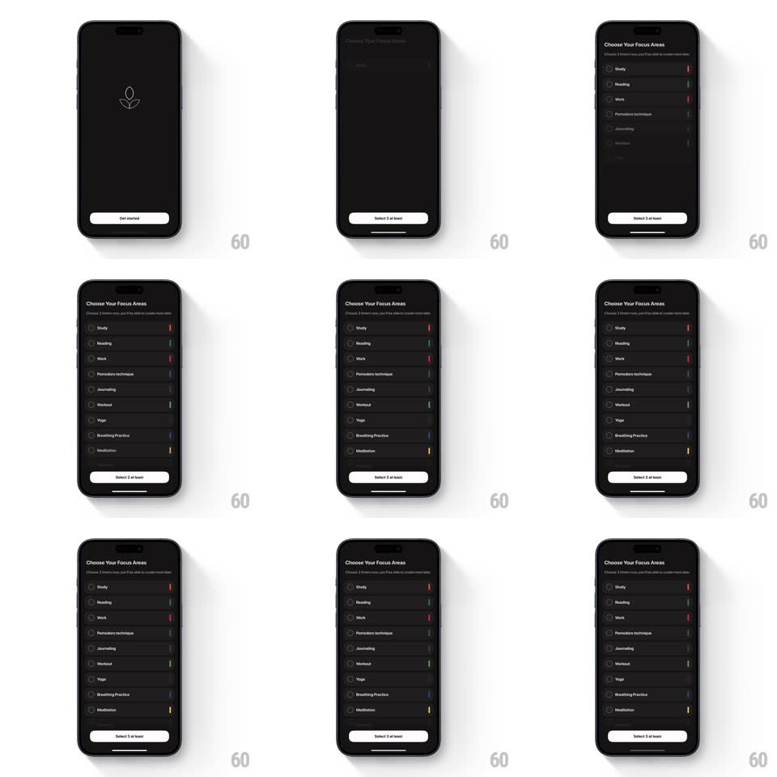

Media
Frame-by-frame

Rebuild this interaction 1:1: Emphasis's onboarding transition - tapping "Get started" on the intro screen ("Boost your focus with Emphasis") replaces it with the "Choose Your Focus Areas" screen, whose header slides in first and whose list of selectable focus areas (Study, Reading, Work, Pomodoro technique, Journaling, Workout, Yoga, Breathing Practice, Meditation) staggers in row by row.

Rebuild this interaction 1:1: Emphasis's onboarding transition - tapping "Get started" on the intro screen ("Boost your focus with Emphasis") replaces it with the "Choose Your Focus Areas" screen, whose header slides in first and whose list of selectable focus areas (Study, Reading, Work, Pomodoro technique, Journaling, Workout, Yoga, Breathing Practice, Meditation) staggers in row by row.
## Integration
Integration: stack-agnostic spec - springs given as stiffness/damping, timed motions as duration + curve; map every value to your framework and animation library of choice.
## Scene
Dark intro screen: Emphasis leaf logo, headline and explainer copy, white "Get started" button. Target screen: "Choose Your Focus Areas" header, a list of rows (check circle left, name, thin colored bar right), and a "Select 3 at least" button.
## Motion spec
Pattern: exit-then-staggered-enter page transition.
- Tap: the intro content exits upward and fades (250ms, ease-in) while the button morphs color from white to the darker chrome.
- The new header ("Choose Your Focus Areas" + subline) slides in from the top (translateY -16px + fade, spring ~340/22, 300ms).
- The list rows stagger in from the bottom (translateY 20px + fade, spring ~360/24, 45ms apart, top to bottom) so the list cascades down the screen.
- The "Select 3 at least" button slides in last with the final rows.
- Row selection: tapping a row fills its check circle (scale spring ~420/24, 180ms) and brightens its right-edge color bar; the button enables once 3 are picked ("Proceed").
## Calibration
- The old screen fully exits before the header enters - no overlap.
- The stagger is fast (45ms) - a cascade, not a parade.
## Reduced motion
Cross-fade between screens (200ms); rows fade together.
## Don't miss
- Each row's thin right-edge bar carries its focus color (red, green, pink, blue, yellow...) - the list is otherwise monochrome.
- The button copy changes state ("Select 3 at least" -> "Proceed") as the selection count crosses 3.